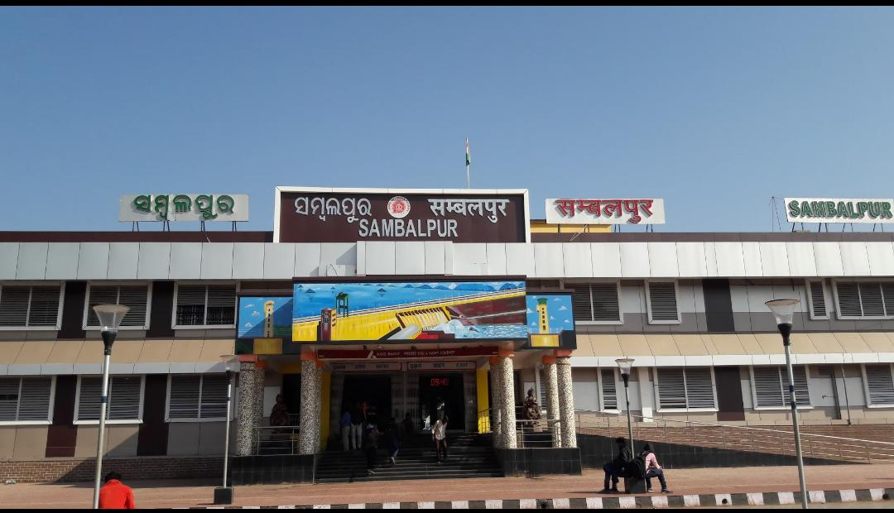

|  |
The District covering a geographical area of 6702 sq km lies between 20 degree 40’ to 22 degree 11’ North Latitude and 82 degree 39’ to 85 degree 15’ East Longitude. Total population of the District as per 2011 census is 10,41,099. Total male population of the District is 5,26,877 whereas total female population is 5,14,222. The District has got total 1,91,827 SC population and 3,55,261 ST population.
As per the administration of the District is concerned, the District of Sambalpur has got 3 sub divisions namely Sambalpur, Kuchinda and Rairakhol. There are 9 Tahasils, 9 Blocks, 24 Police stations, 1349 Revenue Villages and 138 Gram panchayats functioning in the District.
Sambalpur District experiences extreme type of climate with 66 rainy days and 153 centimeters rainfall on an average per annum. Most of the rainfall is confined to the months from June to October visited by south west monsoon. Mercury rises upto 47 degree C during May with intolerable heat wave and falls as low as 11.8 degree C during December with extreme cold. The rainfall is highly uneven and irregular.